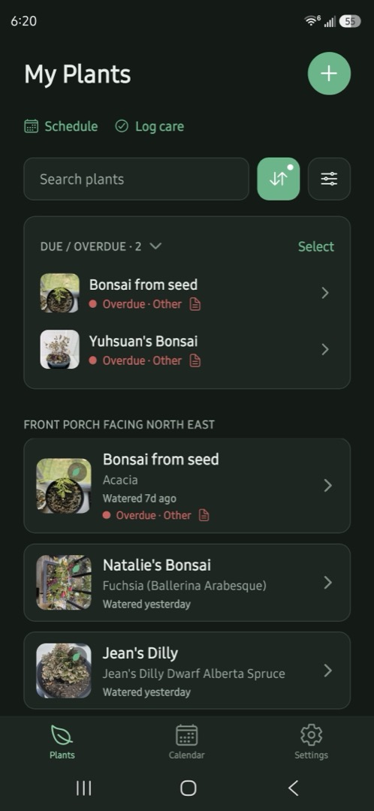

Plant Journal Android app — AI care scheduling, photo analysis, and chat Apex Test with Logging
VS Code CodeLens to run Apex tests and open the debug log
Apex Test with Logging
VS Code CodeLens to run Apex tests and open the debug log
Senior software engineer with a Salesforce background. Outside work I build personal projects past the CRM: an Android app with AI-backed care scheduling, photo analysis, and per-plant chat, and a VS Code extension that runs Apex tests with debug logging.